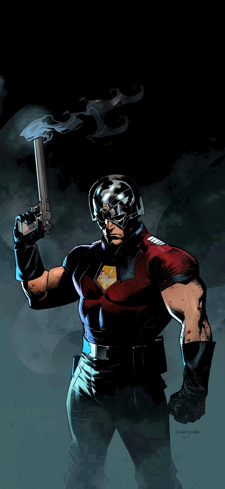

|  | BIOGRAFIA |
|---|---|
|
Pacificador, nome real Christopher Smith, é um anti-herói que acredita na paz acima de tudo
até mesmo se precisar usar violência extrema para alcançá-la.
Ele foi treinado desde jovem para ser um soldado implacável,
mas carrega traumas profundos relacionados ao pai, que moldou sua visão distorcida de “paz”.
Apesar de brutal, Christopher tenta ser alguém melhor,
lutando contra seus próprios erros enquanto trabalha em missões secretas para o governo. | |
| ARMAS | |
|
Capacete Tecnológico: Cada capacete tem um poder especial (explosão sônica, invisibilidade, força, etc.). Representa sua identidade única como Pacificador. Pistolas e Rifles: Armas de fogo variadas. Mostram seu estilo direto e agressivo de combate. Faca de Combate: Usada em lutas corpo a corpo. Simples, brutal e eficiente | |
| Habilidades | |
|
Atirador Especialista: Precisão altíssima com qualquer arma. Combate Corpo a Corpo: Forte, resistente e treinado em várias técnicas militares. Determinação Obsessiva: Não desiste de uma missão, mesmo que isso o destrua. |